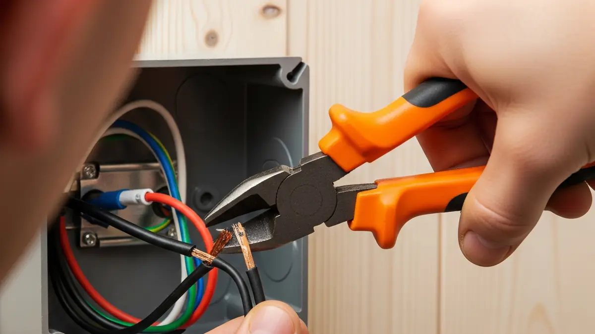

In short
A rewire replaces the old cables behind your walls, floors and ceilings, along with the sockets, switches, lights and consumer unit, so your electrics are safe and meet current regulations. I carry out full and partial rewires, including in houses where people are still living.
Signs you may need a rewire
- Fabric- or rubber-covered cables, or old round-pin sockets
- A fuse box with rewirable fuses
- Sockets or switches that are warm, scorched or crackle
- Fuses blowing or breakers tripping for no clear reason
- Flickering lights or a buzzing sound
- An EICR that says the wiring is unsatisfactory
None of these means you definitely need a full rewire. An EICR is the best way to find out, and sometimes a partial rewire or a consumer unit upgrade is enough.
Full rewire or partial rewire?
A full rewire replaces the wiring throughout the property. A partial rewire covers part of it, such as a kitchen, an extension or one floor, and is often enough if the rest of the wiring tests well. I'll tell you which makes sense and quote for the option you choose.

Rewiring older stone and period properties
Many homes across the Dales are solid stone, which makes hidden cable runs harder. Depending on the property, that can mean working through lofts and under floorboards, using existing routes where it's safe to do so, and surface-mounted cables or trunking in places. Listed buildings have extra considerations, and I'll advise on what to check with the conservation officer at the council first.
Can I live in the house during a rewire?
Often yes. It takes planning: working room by room, keeping power on where possible and agreeing which rooms I do first. It's usually quicker and easier if the property is empty, so I'll give you an honest view of both.

How a rewire works
- Survey and quote. I look at the property, the existing wiring and how you use each room, then give you a quote.
- First fix. New cables and back boxes go in. If walls and floors are being redecorated, this happens before plastering.
- Making good. Chased walls and lifted floors need to be made good. I'll tell you what's needed; plastering and decorating are usually done by others.
- Second fix. I fit the sockets, switches, lights and the new consumer unit.
- Testing and certificates. I test every circuit and you receive an Electrical Installation Certificate. As a NAPIT registered electrician, I notify building control for you.
How long does a rewire take?
It depends on the size of the property and how easy it is to reach the cable routes. An average house typically takes around a week, and larger or older properties take longer. I'll give you a timescale when I quote.
Common questions about rewires
How do I know if my house needs a rewire?
The most reliable way is an EICR. It tests the wiring and tells you its condition. Old fabric-covered cables, round-pin sockets and a fuse board with rewirable fuses are all signs, but none of them means you definitely need a full rewire.
Do I need to move out during a rewire?
Often not. I can work around you, room by room, though it takes planning and some patience. It's usually quicker and easier if the property is empty, and I'll give you an honest view of both options.
Will a rewire make a mess?
Any rewire involves some disruption, because cables have to be run through walls, ceilings and floors. I protect floors and furniture, keep the work area tidy and explain what to expect in each room first.
Do I need building regulations approval for a rewire?
Yes, a rewire is notifiable work in England. I'm registered with NAPIT, so I notify building control through the scheme and you receive the certificates.
Is a new consumer unit included in a rewire?
Almost always. A rewire normally includes a new consumer unit with RCD protection, and I'll confirm exactly what's included in your quote.